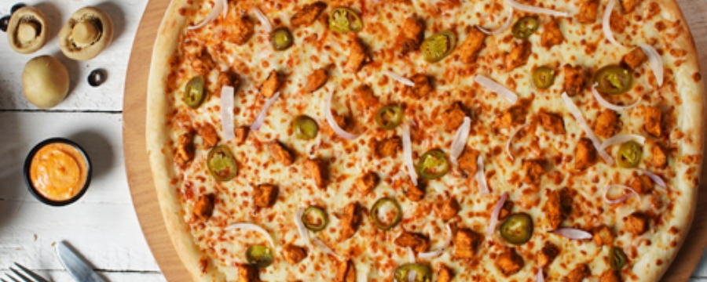
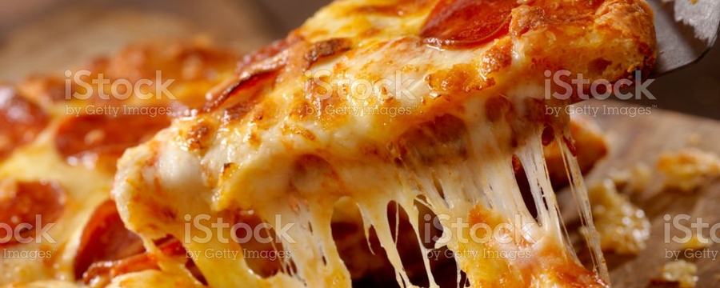
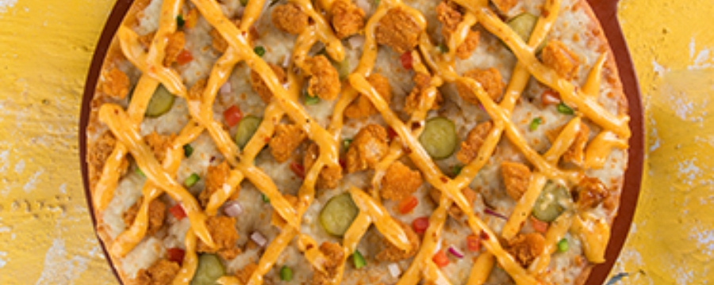
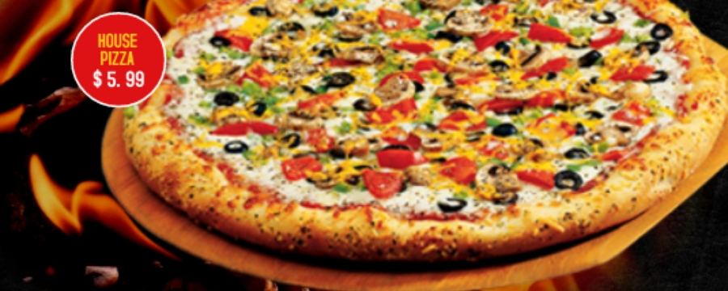

Home
About
Services
Our Deals
Contact us
Home
About
Services
Our Deals
Contact us
- 
- 
- 

-
- 

VEG PIZZA
The vegetarian pizzas are made mainly for consumers who prefer vegetables and generally ingredients such as peppers, mushrooms, tomatoes, cheddar, Mozzarella, olives, onions and corn are used. In case there are any ingredients in the pizza which you do not like you can have it removed or have the ones you like added on more. Vegetarian pizza, often preferred by people who do not eat meat, contains less calories in comparison with other selections.

TIKKA PIZZA
The Tikka pizzas are made mainly for consumers who prefer chicken and generally ingredients such as peppers, Tikka, tomatoes, cheddar, Mozzarella, olives, onions and corn are used. In case there are any ingredients in the pizza which you do not like you can have it removed or have the ones you like added on more. Vegetarian pizza, often preferred by people who do not eat meat, contains less calories in comparison with other selections.

Copyright © 2022, pixza,Powered by
Aeiyan khan